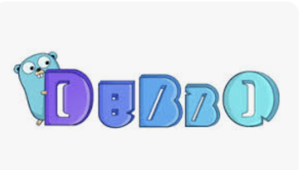

Teaching & Service
Teaching has been part of my work since school olympiad training, and open-source service has
been part of it since my internship. Both shape how I approach research: explaining a system
to someone else is the fastest way to find out whether I actually understand it.
Teaching

CS1033 — Programming Fundamentals
Spring 2026
Teaching Assistant · University of Moratuwa
-
Conducted tutorial classes for first-semester students on basic data structures and
algorithms in C++ and Python.
- Designed lab exercises and assessed student submissions.
CS3501 — Data Science and Engineering Project
Fall 2025
Teaching Assistant · University of Moratuwa
-
Supervised and evaluated two undergraduate research groups through a
semester-long project.
-
Selected for this role on the strength of the A+ I earned in the same module for my
ECG biometrics project.
Outreach & Mentoring
Invited Talk — Mathematics for Competitive Programming
Jan 2024
Mathematics Society, University of Moratuwa
Trainer — Sri Lanka Olympiad Mathematics Foundation
Dec 2022 – Apr 2023
National olympiad team preparation
-
Trained the teams representing Sri Lanka at the Thailand International Mathematics
Olympiad and the Hong Kong International Mathematics Olympiad.
Open-Source Service

Apache Synapse PMC Member
2025 – Present
Security lead and release manager · Apache Software Foundation
-
Sustained contribution to a large production Java codebase: triaging and patching
vulnerabilities reported through Project Glasswing and landing remediations via the
ASF security process.
-
Elected to the Project Management Committee after election as a committer, and now
help steer the project's technical direction.
Apache Synapse-Go Committer
2025 – Present
Go rewrite of the Synapse Enterprise Service Bus
-
Implemented core components of the Go-based ESB, including a format-independent,
lazily built message model inspired by Apache Camel.
-
Designed an out-of-process connector architecture over RPC, replacing the dynamic
class loading that Go cannot reliably support, and a runtime-configurable
per-package logging package to replace Log4j semantics.
-
Wrote developer documentation and engaged the Synapse dev community to establish a
path for future contributors.
C2FO/VFS
2024
Go virtual file system library · Contributor

Apache Dubbo-Go
2024
RPC framework samples · Contributor
Leadership
-
2023–24
President, Mathematics Society, University of Moratuwa (Nov 2023 – Dec 2024).
-
2023
Manager, Data Analysis Team, AIESEC in Colombo South (Jan – Aug 2023).